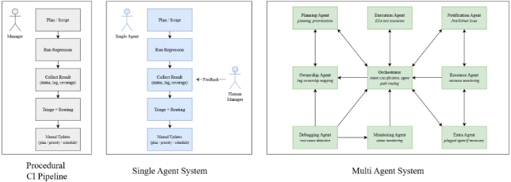
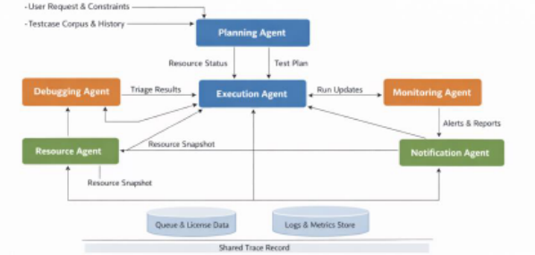

面向自主回归管理的多智能体编排
论文针对设计验证回归管理的人工瓶颈：现有自动化流水线（如 Jenkins）只负责触发与监控，失败与覆盖率信号彼此割裂，需人工经理解读并转发，导致根因信息传递慢、反复 rerun。作者将回归管理建模为闭环控制问题，提出由中央 Orchestrator 协调 Planning、Execution、Monitoring、Resource、Debugging、Notification 六类角色化 LLM Agent 的多智能体架构，Agent 间以 schema 校验消息、共享证据包与严格 guardrail 协作，Debugging Agent 下设 Root-Cause 与 Duplicate 子 Agent，所有诊断必须引用具体证据否则弃权。在 500 条合成 DV 失败案例的受控基准上，多智能体方案将 owner 分配准确率从单 Agent 的 63.3% 提至 76.7%，root-cause Match@0.5 从 62.7% 提至 77.3%，duplicate 检测 micro-F1 从 40.8% 升至 96.0%，代价为每案例约 +1 秒与 +1 次 Agent 调用。结论是角色专业化与结构化证据处理能以适度开销提升 triage 可靠性，但多 Agent 相对单 Agent 的部分增益未通过 Bonferroni 校正，且评测为受限范围的确定性仿真。
回归管理已成为验证吞吐的关键瓶颈：传统自动化流水线（如 Jenkins）是脚本化、开发者定义、以执行为中心的线性流程，只能触发和监控运行，无法解读失败、路由责任归属，也无法把运行结果转化为下一轮的测试范围、优先级与调度更新。失败与覆盖率信号孤岛化，根因信息在 owner 之间传播缓慢，造成跨团队来回与重复 rerun；当设计或验证环境变化时，人工经理成为持续瓶颈。triage 中读错证据（漏看 stack trace 关键行、提取错误签名、链错 duplicate bug ID）会显著拉长解决周期。
将回归管理显式建模为闭环控制系统（goal/state/action/feedback：sign-off 目标、回归状态、控制动作、每轮结果反馈），提出多智能体编排架构：中央 Orchestrator 负责意图分类、Agent 路径选择与 typed schema 消息路由（最小权限、共享 trace 记录）；Planning Agent 生成满足 deadline 与资源/license 约束的优先级测试计划（不可行须拒绝）；Debugging Agent 拆分为 Root-Cause 与 Duplicate 子 Agent，产出证据支撑的根因解释与 duplicate_of 精确关联，证据不足时弃权并留审计轨迹；Execution Agent 依据工具指南构建最小权限、区分 simulation/emulation 的运行命令；Monitoring Agent 严格只读，跟踪测试状态并发出标准化失败事件；Resource Agent 上报带时间戳的队列/license/算力快照；Notification Agent 按 need-to-know 策略分发到 Jira/邮件/消息。评测聚焦 triage 子系统（Ownership Agent + Debugging Agent），在相同 MockToolRegistry 工具访问与固定预算（50 次 Agent 调用、100k tokens、300s、100 次工具调用）下对比 legacy 程序化 CI 脚本、单 Agent 与多 Agent 三种架构，指标包括 Owner Accuracy、Root Cause Jaccard/Match@0.5、Duplicate micro-F1 与成本。
Owner 分配准确率：legacy 28.7% → 单 Agent 63.3% → 多 Agent 76.7%（多 Agent 相对单 Agent +13.3pp，p=0.0142）
Root-cause 质量：legacy 平均相似度 1.9%、Match@0.5 = 0.0% → 单 Agent 62.7%/62.7% → 多 Agent 76.9%/77.3%（Match@0.5 相对单 Agent +14.7pp，p=0.0077）
Duplicate 检测 micro-F1：legacy 22.7% → 单 Agent 40.8% → 多 Agent 96.0%，为最大增益项
成本：多 Agent 每案例 4.04s、4.0 次模拟 Agent 调用，相比单 Agent（3.05s、3.0 次）增加约 +32% 时间与 +1 次调用；legacy 仅 0.10s；多 Agent 比单 Agent 慢 +0.983s/案例（p<0.0001）
统计显著性：α=0.05 下多 Agent 相对单 Agent 的 Owner Accuracy 与 Root Cause Match@0.5 提升显著，但未全部通过 Bonferroni 校正（α=0.0071）；两种 Agent 方案相对 legacy 基线在校正后仍强显著
数据集：500 条合成 DV 失败案例（350 历史池 / 150 评测集），评测集中 26.0%（39/150）为 duplicate，涵盖 RTL 功能失败、UVM/基础设施问题、编译失败与 flaky 测试
论文自述的四点贡献构成其与已有工作的区别：(1) 将回归管理建模为闭环控制问题而非线性脚本流水线；(2) 提出角色分解的多智能体编排架构（Planning/Execution/Monitoring/Resource/Debugging/Notification + Orchestrator），以 typed schema 消息、共享证据包与 guardrail 替代人工交接；(3) 给出含 Agent I/O 定义、tool adapter 与安全 guardrail 的端到端设计蓝图，支持动态回归环境；(4) 在相同工具访问与固定预算的受控基准下对比 procedural 与单 Agent 基线，以隔离架构协调效应。论文正文未引用具体先前工作进行对比，以上为其自述定位。
相关度级别：high
命中能力域：2.4 设计验证方法学 | 2.7 EDA/验证自动化与 AI 辅助
理由：论文直接命中团队 2.4（回归与 CI、bug triage 与 debug 方法学）与 2.7（LLM/AI 辅助验证、验证流程自动化与 CI）两个能力域的核心技术与代表工程场景：回归 triage（owner 路由、根因解释、duplicate 关联）是团队 LPDDR/HBM4/UCIe 等产品线大规模回归的日常瓶颈，论文的多 Agent 架构、guardrail 设计、弃权机制与受控评测方法可直接映射到团队回归流程自动化与可复用方法学建设；其闭环控制框架（结果反馈驱动下一轮 scope/优先级/调度）也与团队沉淀自动化能力的方向一致。
建议动作：深入精读并做内部分享
Sangwoo Noh 1，Jin Choi 2，Seonghee Yim 3，Youngsik Kim 4（1 sangwoo.noh；2 jjin.choi；3 sh.yim；4 ys31.kim@samsung.com）
摘要：设计复杂度的不断增长与计算资源的有限，使得回归管理成为现代验证中的关键瓶颈。尽管回归自动化流水线减少了人工执行工作，但它们在很大程度上仍然是线性的、以执行为中心的：失败与覆盖率信号往往彼此孤立，因此必须由人工管理者来解读并传递这些信号，而不是让信号直接驱动下一轮的问题分类（triage）与后续决策。这种以管理者为中心的流程增加了周转时间，并在设计或验证环境发生变化时造成持续性瓶颈。为解决这一问题，我们提出一种AI驱动的闭环回归架构，其中每次运行的结局都可以反馈到下一个决策周期，从而实现对问题分类动作的自适应更新，并在完整系统中实现对范围、优先级与调度的自适应更新。我们通过多智能体编排来实现这一流程：由一个中央 Orchestrator（编排器）协调角色专门化的大语言模型（LLM）智能体，在共享的、经模式（schema）校验的证据包和严格的防护栏之下，执行问题分类的控制器归属路由、有证据支撑的根因解释以及完全相同重复项的关联。在一个受控基准测试中，我们在相同的工具访问权限和固定预算下评估问题分类的控制器归属路由、根因解释与重复项关联，以隔离架构层面的影响。结果表明，角色专门化与结构化证据处理能够以适度的开销提升问题分类的可靠性，为迈向更具自适应性的回归管理提供了一条切实可行的路径。
随着现代数字设计日益复杂，回归管理已成为制约验证吞吐量的关键因素。传统自动化流水线提升了可重复性，但仍然是脚本化的、由开发者预先定义的，且实质上是线性的：回归数据经由一位管理者流转，由其监控进度并持续调整测试范围、配置与调度。这种以管理者为中心的工作流造成了吞吐量瓶颈：根因信息在各个负责人之间传播缓慢，延误了问题的解决，并引发反复重跑以重新发现和验证修复。即使已有自动化手段（例如 Jenkins），大多数回归流程仍然以执行为中心：系统能够触发并监控运行，但无法解读失败、路由归属，也无法将结果转化为更新后的范围、优先级与调度。
在回归问题分类（triage）中，解读证据时哪怕很小的错误也可能造成严重延误——例如，遗漏堆栈跟踪（stack trace）中用于责任定位的关键行、提取到错误的错误签名，或将某个失败关联到错误的“重复”缺陷 ID。这些错误往往导致团队之间的来回沟通与反复重跑。角色分解通过将问题分类拆分为清晰的步骤——证据提取、归属判定与完全相同重复 ID 的关联——来帮助避免此类错误，使每个步骤都能在受限的、特定角色的工具访问权限下得到独立核查。
本文为设计验证回归自动化做出了四项贡献。首先，我们将回归管理构建为一个闭环控制问题，而非线性脚本化流水线。其次，我们提出一种角色分解的多智能体编排架构，由规划（Planning）、执行（Execution）、监控（Monitoring）、资源（Resource）、调试（Debugging）与通知（Notification）智能体组成，并由中央编排器（Orchestrator）进行协调。第三，我们给出一份端到端设计蓝图——包括智能体输入/输出（I/O）定义、工具适配器与安全防护栏——能够支持在动态回归环境中的运行。第四，作为一种受控且可解释的评估，我们在相同的工具访问权限与固定预算下，将问题分类控制器与程序化基线及单智能体基线进行基准对比，报告归属分配准确率、根因质量（相似度与 Match@0.5）、重复项关联 micro-F1 以及成本指标。
闭环控制系统由几个基本部分组成：目标、状态、动作和反馈。目标规定了系统应当达到或维持的期望目标。状态表示系统当前被观测到的状况，通常由测量输出或遥测信号来表征。动作是为使系统更接近目标而对系统施加的干预。反馈路径将测量到的状态返回给控制器，使其能够将当前状况与目标进行比较，并相应地更新后续动作。
设计验证回归可以映射到闭环系统的各个基本部分上。目标由签核（sign-off）目标定义——例如进度里程碑、达到目标覆盖率水平，以及满足诸如故障率上限之类的质量阈值。状态是回归当前被观测到的状况——覆盖率收敛状态、未解决的故障积压、运行时间趋势以及资源可用性。反馈是每次运行所返回的结果流——故障日志与签名、覆盖率增量、通过/失败统计以及队列/资源指标——用以指示当前状态偏离目标的程度。动作是为下一个周期采取的一组控制举措：选择或裁剪测试、调整优先级与调度、重新分配计算资源与许可证、触发针对性的重跑，以及将问题分派给相应的负责人。这些部分共同构成一个不断重复的循环，其中每次回归迭代都基于观测到的结果来更新下一个计划。
通常，人类回归管理者在一个基本线性的流水线中，以一系列脚本化步骤的方式来操作这一循环。他们观察正在进行的回归过程的状态，对照既定目标评估进展，对失败用例进行分诊，然后在启动下一次运行之前调整测试选择、约束、优先级和资源使用。然而，这揭示了问题结构与主流架构之间的不匹配。闭环回归需要在非平稳条件下进行持续的重新规划——频繁的设计变更、覆盖率缺口以及波动的队列与许可证可用性——而静态的线性流水线只能通过人工编辑和顺序交接来做出反应。运行这一控制循环的更好方式，是让“控制器”呈分布式且灵活，而不是集中在一个管理者或一个固定脚本之中。在实践中，不同的信号需要不同的专业知识——故障分诊、覆盖率收敛以及队列/资源管理——因此各专业化智能体可以各自跟踪状态中属于自己的部分，共享所学到的信息，并协调下一步行动。我们的多智能体编排用工具驱动的动作取代了人工交接，因此当出现新的失败、覆盖率结果或资源约束时，测试范围、优先级和调度可以立即得到更新。
智能体（agent）是一种自主软件实体，负责某项特定功能，例如规划、执行、监控、调试或报告。它只考虑该功能所需的信息，并通过结构化的输入和输出与其他智能体交互，同时受到约束其行为的显式策略和护栏（guardrails）的限制。一个智能体由以下部分组成：(i) 角色与职责规范，用于定义其目标和决策范围；(ii) 可选的子智能体（sub-agent），用于分解内部技能（例如，调试与报告功能内部的日志摘要子智能体）；(iii) 结构化的输入和输出，使各智能体之间能够进行一致的通信；(iv) 工具适配器，用于安全地调用外部系统；(v) 显式的通信拓扑，定义哪些上游和下游智能体可以交换信息；以及 (vi) 护栏，用于约束行为并支持可审计性。
单智能体系统依赖一个通用智能体来端到端地解释请求、维护状态、规划动作、调用工具并执行策略。虽然这种设计易于部署，但随着任务种类和系统复杂度的增长，它变得难以扩展。单个智能体必须积累并管理日益庞大的内部记忆和上下文，才能在各次决策之间保持一致，这会提高维护成本，并可能导致行为不稳定，包括随着提示词、工具和策略的演进出现响应不一致和幻觉输出。由于决策和动作是集中式的，吞吐量受到串行处理的限制，且该智能体成为单点故障。此外，将推理、工具执行和策略执行组合在一个组件中会模糊职责边界，使得在需要解释或纠正行为时，最小权限控制、审计和调试变得更加复杂。
多智能体编排非常适合设计验证回归，因为回归本质上是一个闭环过程，必须在不断变化的条件下反复将结果转化为下一步控制动作。该循环必须处理异构的信号和时间尺度，同时适应 RTL、测试平台（testbench）和工具链的频繁变化，并在诸如计算资源和 EDA 许可证有限等硬约束下运行。
多智能体系统通过将每项功能分配给具有清晰接口的专用智能体、通过编排器（orchestrator）协调它们的决策，并将结果反馈回来以在每个周期更新测试范围、优先级、调度和资源分配，从而满足这些需求。

在本文中，我们提出一种多智能体回归管理系统，以应对设计验证回归所带来的挑战。为使该设计具体化，我们将回归管理分解为一小组角色专用的智能体，每个智能体都具有明确定义的职责和接口。规划智能体（Planning Agent）将项目进度、实时资源状态和历史记录转化为满足截止期限、按优先级排序的测试计划；调试智能体（Debugging Agent）通过将每个案例分配给最可能的责任人、基于具体证据识别并总结根本原因，以及通过将其与正确的既有标识符相关联来检测该失败是否为已知问题的重复，从而将失败转化为可审计的分诊结果；执行智能体（Execution Agent）将该计划转化为跨异构工具的最小权限、环境感知的运行；监控智能体（Monitoring Agent）持续跟踪测试的实时状态，发出失败证据和重新规划触发信号；资源智能体（Resource Agent）报告实测的容量信号——例如队列负载、许可证使用情况和可用算力——以使计划在不断变化的约束下保持可行；通知智能体（Notification Agent）则在具备访问控制和默认对管理者可见的设置下，将结果分发至 Jira/邮件/消息平台。协调来自类型化且经模式校验的消息，以及包含日志、提交哈希和队列/许可证快照的共享追踪记录；后续各节将以同样简洁的格式描述每个智能体——其子智能体、输入、输出以及严格的护栏。
编排器（Orchestrator）是协调层，它将用户请求和实时回归信号转化为一致的多智能体工作流。其主要功能是意图分类、智能体路径选择和路由。首先，它将传入的触发请求（例如“运行冒烟回归”、“分诊新失败”、“重跑重复项”、“覆盖率缺口收敛”、“资源冲击”）分类到一小组受支持的意图中，并确定满足该意图所需的最小智能体集合。其次，基于分类后的意图和当前系统状态，它选择一条执行路径——即具有显式数据依赖关系的有序智能体调用序列（例如，仅分诊流程采用 Monitoring → Debugging → Notification，而运行启动流程采用 Resource → Planning → Execution → Monitoring）。第三，它使用类型化模式在智能体之间路由结构化消息，确保每个下游智能体仅接收其所需的字段（最小权限），并确保所有中间产物都在共享追踪记录中被跟踪。其输出为：(i) 所选定的工作流——即调用哪些智能体以及按何种顺序调用；以及 (ii) 在每一步发送给每个智能体的打包证据和明确指令。
规划智能体（Planning Agent）是系统在回归测试运行开始前进行决策的组件，它将开放式的用户请求和不断变化的项目条件转化为在截止期限内可行且价值最大化的回归测试计划。它综合考虑 tape-out/MTO 约束、预期的边际覆盖率增益和执行成本，使每个被选中的测试用例、种子（seed）和配置在进度和预算两方面都有充分依据。其输入包括：用户请求和项目约束（里程碑、冻结日期、tape-out/MTO）、测试用例库及其历史记录（历史结果、覆盖率增量、最近的 RTL/UVM 变更），以及来自以下两方面的反馈：(i) 资源智能体（Resource Agent），其报告当前服务器/队列和许可证的可用情况；(ii) 监控智能体（Monitoring Agent），其随着运行的推进报告各测试的状态和最终结果。规划智能体的主要输出是一个带时间戳、按优先级排序的计划——即计划好的测试用例执行顺序及其种子/配置和预定时间窗口——该计划被发送给执行智能体（Execution Agent）。执行智能体将计划转化为作业，监控智能体将实时状态和结果发布回规划智能体，资源智能体则持续更新可行性约束，使规划智能体能够在条件发生变化时重新排序或调整范围。规划智能体不得产生不可行的计划——每个计划都必须满足截止期限以及资源/许可证限制，否则它必须返回附带原因的明确拒绝。
调试智能体（Debugging Agent）通过将每个失败用例转化为两个关键输出来执行回归分诊：清晰的根因解释和重复链接（如果该失败是已知失败）。为了保持逻辑简单可靠，调试智能体被拆分为两个子智能体：根因智能体（Root-Cause Agent）和重复智能体（Duplicate Agent）。其输入包括有界的日志片段、主要错误消息以及测试用例元数据（例如测试 ID、种子/配置、特性标签和相关模块/IP）。此外，它可以从监控智能体（Monitoring Agent）拉取实时状态和失败证据，包括当前测试用例状态以及指向运行产物（如完整日志或波形）的指针（URI）。调试智能体的输出是一条结构化的分诊记录，其中包含（1）简短的根因文本，（2）no-duplicate 或 duplicate_of=<ID>，以及（3）指向所用确切证据的简要理由。当分诊结果表明有针对性的重跑是有用的——例如，用于确认疑似重复项已被解决，或确认某项缓解措施改变了失败特征——调试智能体还会向执行智能体（Execution Agent）发出可操作的重跑请求（例如测试用例 ID、推荐的种子/配置/标志，以及基于证据的理由），使系统能够验证诊断并相应地更新状态。

根因智能体基于证据撰写简短的诊断，同时保留错误代码、文件路径和配置键等重要标识符，使结果保持可复现。重复智能体检查该用例是否与过去的失败相匹配，如果匹配，则将其链接到正确的历史 ID。它通过查询失败历史数据库并比较关键特征（错误代码、文件路径、测试名称）来实现这一点，而不是仅依赖“相似含义”。
随后，调试智能体将两个子智能体的输出合并为一个最终答案，确保重复链接与根因文本不相互矛盾。调试智能体使用一小组安全的工具：历史搜索工具（例如 db_query）用于查找类似的过去失败和候选 ID，以及轻量级搜索/解析工具（例如 grep 风格的模式搜索）用于从日志中提取关键特征。护栏非常严格：它不得猜测。每个诊断或重复链接都必须引用具体的产物（工具结果或特定日志行）。如果证据薄弱，智能体可以弃权并返回“证据不足”，而不是编造答案，并且它始终留下审计轨迹，使人工能够追溯决策是如何做出的。调试智能体不得猜测——每个责任人/根因/重复判定都必须有具体证据（工具输出或特定日志行）作为支撑，否则它将弃权。
执行智能体（Execution Agent）将计划转化为在不同后端上的实际运行，同时保持严格的安全限制。它的输入包括：(1) 来自规划智能体（Planning Agent）的有序测试用例列表（包含种子/配置以及预定的时间窗口），以及 (2) 来自调试智能体（Debugging Agent）的定向重跑请求（例如，使用特定种子或标志重跑某个测试用例，以确认疑似重复项或验证某个修复）。基于这些输入，该智能体通过阅读经批准的工具指南和环境描述来构建精确的运行命令。它对标志、路径、许可证使用和种子处理等常见细节进行标准化，并根据运行模式——仿真（simulation）与硬件仿真（emulation）——以不同方式构建命令。关键点在于，工具指南就像每个后端的“如何运行”规则手册，因此该智能体能够跨不同的回归工具创建正确的命令，而无需绑定于某一特定厂商的工作流程。其护栏是严格的设计验证范围：未经授权的命令、特权 shell 操作或临时性的系统修改都会被拒绝并记录在案，且所有调用在分发之前都会对照工具指南进行验证。
监控智能体（Monitoring Agent）维护回归的实时状态。它持续更新每个 testcase 的状态——排队中、运行中、通过、失败或易出错——并检测何时发生了错误。当观察到失败时，它会发出一个附带最小证据的标准化失败事件，并将其转发给调试智能体（Debugging Agent）。当先前失败的 testcase 在重新运行后变绿时，它会相应地标记状态，并通知规划智能体（Planning Agent），以便在需要时重新调度该用例。它还在测试套件和里程碑层面汇总简单的进度视图，以显示当前运行与计划之间的差距。
监控智能体所用工具的功能包括：从调度器和工作流状态 API 中读取信息、消费执行遥测数据流，以及对有界的日志摘录进行尾部跟踪以捕捉首个错误信号。它将结构化的状态记录写入度量存储库，并对外提供面向人类与对等智能体的读取 API 和仪表板。所有大型工件均保留在外部存储中，并通过稳定的 URI 进行引用。
监控智能体对工件和执行状态严格只读；它不会修改日志、更改作业配置，也不会推断补救措施。它发出的是信号而非处置方案，为每次更新附加时间戳和溯源信息，并对重复事件进行速率限制。如果上游数据不完整，它会降级为尽力而为的报告方式，而不会捏造状态。
资源智能体为规划智能体提供关于当前容量的可靠视图。它以监控智能体采集的实时状态和运行信号作为输入，包括队列状态、许可证使用情况，以及反映仿真器或模拟器运行状况的轻量级运行元数据。当规划智能体请求更新时，资源智能体输出一份资源快照，汇总当前可用的资源——例如空闲的计算槽位、预期的队列延迟和剩余的许可证容量——以便规划智能体决定是启动、延迟还是缩减回归计划的某些部分。它的护栏是只报告实测状态：不得猜测未来的可用性，并且必须附带时间戳（或快照 ID），使规划智能体能够避免基于过时的资源信息做出决策。
通知智能体（Notification Agent）确保结果以正确的策略、通过正确的渠道送达正确的利益相关者。它将执行摘要、调试诊断结果和状态变更打包，通过 JIRA、电子邮件和消息传递子智能体进行投递，从所有权映射表和关注列表中选择收件人，并实施访问控制，默认对管理者可见。其输入是由调试（Debug）与执行（Execution）环节发出的可报告载荷，并辅以受众上下文信息；其输出是投递回执、消息 ID 和链接，这些内容会被写回系统的决策可追溯性记录，以实现端到端的可追溯性。该智能体的工具集由 mail sender、messenger sender 以及 Jira post/update 接口组成。它依赖于调试智能体（Debugging Agent）和执行智能体（Execution Agent），并通过确认分发完成闭环。其护栏十分明确：仅分发与设计验证相关的内容，严格遵守授权规则，并通过将消息限定于“需要知晓”的受众范围来避免过度暴露，同时确保管理层的监督。
所提出的架构包含规划（Planning）、调试（Debugging）、执行（Execution）、监控（Monitoring）、资源（Resource）和通知（Notification）智能体，构成一个端到端的回归管理系统。然而，为了实现可控且可解释的仿真基准测试，我们将实验范围限定在分诊（triage）子系统中，因为它直接决定了我们评估中所报告的三项结果，并且能够在固定的证据和工具访问条件下进行测量。在实际的回归流程中，分诊往往是反复出现的瓶颈，其中归属路由（ownership routing）、根因诊断（root-cause diagnosis）和重复检测（duplicate detection）尤其充当着高杠杆的决策关卡：错误的路由会引发跨团队来回推诿，薄弱的诊断会拖慢收敛速度，而漏检的重复问题则会造成冗余工作和缺陷噪声。规划、执行、监控、资源和通知智能体仍是整体系统设计的一部分，但在本基准测试中，它们被视为超出范围的基础设施——要么保持恒定，要么被吸收进数据集生成和证据打包之中——从而使测量到的差异反映的是架构层面的协调与证据处理，而非环境动态。因此，即使在这一精简了智能体的基准测试中，我们仍显式地保留归属智能体（Ownership Agent）和调试智能体（Root-Cause + Duplicate），以便在固定证据和受限工具访问的条件下隔离这些瓶颈决策。该基准测试实例化了两个角色专属的智能体：一个是归属智能体，负责将每个失败分配给最可能的责任人；另一个是调试智能体，其分解为根因（Root-Cause）子智能体和重复（Duplicate）子智能体，以产出有证据支撑的诊断以及案例级别的重复关联决策。
场景 1 对设计验证回归分诊中的归属路由阶段进行建模：在该阶段，系统接收一个失败案例（日志片段以及文件路径、错误码、测试标识符等元数据），并必须确定最合适的责任人。该场景假设可以访问标准工程证据来源——对相关代码或日志工件的模式搜索（例如 grep）、代码归属上下文（例如针对最近修改行的 git blame），以及历史失败数据库查询接口（例如 db_query）——并强调归属决策应可追溯到具体证据，而非隐性的直觉。尽管该场景将 grep、git blame 和 db_query 作为代表性证据来源加以突出，但这些工具只是示例性的；在实践中，可以接入更多回归流程专用的工具来丰富证据收集与可追溯性，例如 Excel 格式文件（例如 .xlsx）和文档/wiki 仓库。该设定反映了真实的分诊情形：同一失败模式可能合理地指向不止一个模块或团队。在这种情况下，系统必须在工具调用次数和运行时间的限制之内，将不清晰或有噪声的线索归结为唯一的责任人。
场景 2 对回归分诊中的诊断步骤进行建模。其目标不仅是将失败路由到相应的责任方，还要撰写一段简短而清晰的根因解释，帮助验证者理解可能出了什么问题以及接下来应当检查什么。每个案例都包含混杂且不完整的线索——例如堆栈跟踪、断言消息、编译错误、配置警告，有时还有间歇性（flaky）行为——因此系统必须基于现有证据形成一个合理的解释。该解释必须便于与专家真值（ground truth）进行比较，因此应保持关键标识符不变（例如文件路径、错误码、配置键和测试名称），并避免含糊的措辞。评分采用基于 Jaccard 的相似度和 Match@0.5 阈值，因此系统应在有限的工具调用次数和运行时间内，以一致、具体的形式陈述疑似原因，并指出哪些检索到的工件支持该原因。
场景 3 对分诊（triage）流程中的重复项处理步骤进行建模。对于每个新故障，系统必须判断它是真正的新问题，还是先前已出现问题的重复。如果是重复项，系统必须将该案例链接到正确的规范引用（例如 duplicate_of 标识符）；如果不是重复项，则应显式输出 "no duplicate"（或等效的空链接）。该场景假设系统可以访问一个历史案例库（例如数据库或文件），其中包含可检索和比较的过往故障签名、简短摘要和规范标识符，涵盖常见的重复模式，例如反复出现的断言失败（如相同的 ASSERT_* 消息或检查名称）、频繁出现的编译/细化（elaboration）错误（如缺失模块/符号），以及已知的与配置相关的故障（如反复出现的缺失键或参数不匹配）。重复项相对少见，且链接必须与正确的先前 ID 完全匹配。我们采用重复检测的 micro-F1 指标来评估性能，因此系统必须同时避免漏检重复项（会导致重复分诊和缺陷噪声）和错误链接（可能掩盖那些只是看似相似的新问题）。与其他场景一样，系统在有限的工具调用次数和时间内运行，并应基于检索到的证据（例如最接近的过往案例以及支持该链接的具体特征）做出决策。
所有系统均访问同一个确定性的 MockToolRegistry，它模拟了常用的分类（triage）工具：grep(pattern, file)、git_blame(file, line) 和 db_query(query)。这些工具使用固定的随机种子，因此相同的输入会产生相同的输出，从而消除工具非确定性这一混杂因素。基于智能体（Agent）的系统被约束在相同的单案例预算之内：最多 50 次模拟智能体调用、最多 100,000 个 token、最多 300 秒墙钟时间，以及最多 100 次工具调用。传统持续集成（CI）基线不消耗任何智能体调用。
我们报告五项主要指标：责任人指派准确率（Owner Assignment Accuracy，精确匹配）、根因相似度（Root Cause Similarity，词元集合之间的 Jaccard 相似度）、根因 Match@0.5（Root Cause Match@0.5，二值指标：相似度 >= 0.5）、重复检测 micro-F1（Duplicate Detection micro-F1，仅当系统既将某案例标记为重复、又给出正确的 duplicate_of 标识符时才计为真阳性），以及成本指标（每案例平均耗时和每案例平均模拟智能体（Agent）调用次数）。评估集中重复关联的正例占比为 26.0%（39/150），因此 F1 比准确率更为合适。
根因文本的规范化是确定性的：我们将文本转换为小写、按空白字符进行分词，不执行词干提取或停用词去除，并原样保留数字、文件路径和错误代码，以保留稀有标识符。由于 Jaccard 相似度有界于 [0,1] 区间，且可能呈现强烈的非正态性（概率质量集中于 0 或 1 附近），我们报告均值和标准差作为描述性的离散程度汇总，而不假设高斯误差模型。
弃权处理。如果系统在护栏（guardrails）约束下对责任人预测或根因预测选择弃权，我们在相应指标中将该输出计为错误。对于重复检测，弃权被视为未建立重复关联（负预测）。
由于所有系统均在相同的 150 个案例上进行评估，我们在全文中统一采用配对统计检验。对于配对的二元结果（Owner Accuracy 与 Root Cause Match@0.5），我们基于两个系统判定不一致的案例应用双侧 McNemar 检验。对于连续型结果（Time per Case），我们对逐案例的时间差进行配对 t 检验。我们通过对评估集进行案例级配对 bootstrap 重采样，报告配对差值的 95% 置信区间。为控制七项预先指定比较的族错误率（family-wise error rate），我们应用 Bonferroni 校正，将显著性阈值设为 0.0071（0.05/7）。本版本中 Duplicate micro-F1 仅作描述性报告；未来工作将补充配对 bootstrap 置信区间以及重复检测的混淆计数（TP/FP/FN）。
我们在设计验证中对三种回归分诊方法进行了基准测试：传统的程序化持续集成（CI）脚本、单体式单智能体架构，以及多智能体架构。我们使用一个分诊数据集（N=500；评估集 n=150），其中包含针对 (i) 责任人分配、(ii) 根因解释和 (iii) 重复检测的专家标注真值，并在相同的工具访问权限和执行预算下，比较了准确率、诊断相似度、重复合并质量以及资源开销。在评估集上，多智能体系统将责任人分配准确率从 63.3% 提升至 76.7%（+13.3 个百分点），将根因 match@0.5 从 62.7% 提升至 77.3%（+14.7pp）。最大增益出现在重复检测方面（micro-F1 从 40.8% 提升至 96.0%）。多智能体分诊产生了适度的额外开销（每个案例 4.04 秒和 4.0 次模拟 Agent 调用，而单智能体为 3.05 秒和 3.0 次调用）。配对显著性检验显示，各项改进在 alpha=0.05 水平上显著，但在多智能体与单智能体的比较中，并非所有改进都能通过 Bonferroni 校正（alpha=0.0071）。
表 1 总结了留出评估集（n=150）上的结果。两种基于 Agent 的系统在各项分诊质量指标上均大幅优于传统程序化 CI 基线：责任人准确率从 28.7%（传统方法）提升至 63.3%（单智能体）和 76.7%（多智能体），根因质量则从传统方法近乎为零的重叠度（平均相似度 1.9%；Match@0.5 = 0.0%）提升至 62.7%/62.7%（单智能体）和 76.9%/77.3%（多智能体）。最大增益出现在重复检测上：micro-F1 从 22.7%（传统方法）提升至 40.8%（单智能体），进而提升至 96.0%（多智能体），这表明角色专业化与结构化证据聚合对于精确的重复项关联尤为有效。这些准确率提升伴随着适度的开销：与单智能体相比，多智能体平均每个案例增加 +0.99 秒（3.05 秒 → 4.04 秒，约 +32%）和 +1.0 次模拟 Agent 调用（3.0 → 4.0）；而传统基线依然很快（0.10 秒），这主要是因为它采用的是轻量级程序化启发式方法，而非证据驱动的诊断。
遗留持续集成（CI）系统在根因评分方面表现尤其差（Root Cause Match@0.5 = 0.0%），主要原因是它无法像真值解释那样生成结构化、人类可读的根因摘要；它大多只输出原始错误行或粗粒度标签。相反，程序化基线通常呈现的是原始失败产物（例如首条错误行、简短的日志摘录，或诸如 'compile failed' 之类的粗粒度失败标签），其中可能包含少量重叠词元（从而产生较小的非零平均相似度），但很少包含足够的解释性内容以超过 Match@0.5 阈值。更广泛地说，遗留基线依赖于固定模式匹配和浅层启发式规则，缺乏跨来源的结构化证据聚合，因而在签名模糊和严格的重复 ID 关联情况下显得脆弱，并导致其在各项分诊指标上的得分持续偏低。
| Metric | Legacy CI | Single-Agent | Multi-Agent |
|---|---|---|---|
| Owner Accuracy | 28.7% | 63.3% | 76.7% |
| Root Cause Similarity (mean ± SD) | 1.9% ± 5.8 | 62.7% ± 48.5 | 76.9% ± 41.7 |
| Root Cause Match@0.5 | 0.0% | 62.7% | 77.3% |
| Duplicate Detection micro-F1 | 22.7% | 40.8% | 96.0% |
| Avg Time per Case | 0.10s | 3.05s | 4.04s |
| Avg simulated Agent invocations | 0.0 | 3.0 | 4.0 |
| Metric | Legacy CI | Single-Agent | Multi-Agent |
表 1. 留出评估集上的总体指标（n=150）
表 2 报告了在同一批 150 个评估案例上进行的配对统计比较。由于每个系统都在完全相同的案例上进行评估，我们采用配对检验来判断所观察到的差异是否超出了抽样噪声而保持一致。对于二元结果（Owner Accuracy 和 Root Cause Match@0.5），我们采用双侧 McNemar 检验；对于每案例运行时间，我们使用配对 t 检验。我们使用案例级配对 bootstrap 重采样来报告差值的 95% 置信区间，并对七项预先指定的比较应用 Bonferroni 校正（α=0.05/7=0.0071）。在 α=0.05 水平下，多智能体系统在 Owner Accuracy（Δ=+13.3pp，p=0.0142）和 Root Cause Match@0.5（Δ=+14.7pp，p=0.0077）方面相对单智能体基线显示出显著提升，但在当前样本量下，这些提升未达到保守的 Bonferroni 校正后阈值。因此，我们将多智能体相对单智能体的提升视为提示性证据，并在未来工作中优先开展更大规模且预先注册的评估。未来版本将报告完整的重复混淆计数（TP/FP/FN）以及 micro-F1 的配对 bootstrap 置信区间，以便将提升归因于精确率还是召回率，并支持具有统计学依据的比较。
相比之下，两种基于智能体的方法在经过校正后，相对遗留基线仍然具有强显著性。运行时间差异同样在统计上可靠：多智能体系统平均每个案例比单智能体系统慢 +0.983 秒（p<0.0001），这反映了与额外的角色特化处理相关的可测量开销。
| Comparison / Metric | System 1 → System 2 | p-value | Sig. @0.0071 |
|---|---|---|---|
| Multi vs Single - Owner Accuracy | 63.3% (95/150) → 76.7% (115/150) | 0.0142 | No |
| Multi vs Single - Root Cause Match@0.5 | 62.7% (94/150) → 77.3% (116/150) | 0.0077 | No |
| Multi vs Single - Time per Case | 3.053s → 4.037s | <0.0001 | Yes |
| Single vs Legacy - Owner Accuracy | 28.7% (43/150) → 63.3% (95/150) | <0.0001 | Yes |
| Single vs Legacy - Root Cause Match@0.5 | 0.0% (0/150) → 62.7% (94/150) | <0.0001 | Yes |
| Multi vs Legacy - Owner Accuracy | 28.7% (43/150) → 76.7% (115/150) | <0.0001 | Yes |
| Multi vs Legacy - Root Cause Match@0.5 | 0.0% (0/150) → 77.3% (116/150) | <0.0001 | Yes |
| Comparison / Metric | System 1 → System 2 | p-value | Sig. @0.0071 |
表 1-2 表明，多智能体设计通过更可靠地处理证据提取与历史匹配，提升了分诊质量，其中重复检测的增益最大（micro-F1 40.8% → 96.0%）。Owner 准确率与根因 Match@0.5 亦有所提升（63.3% → 76.7%、62.7% → 77.3%），但在当前样本量下，经严格的 Bonferroni 校正后这些增益的显著性较弱，而运行时开销则十分明显（每例 +0.99s，并 +1 次模拟智能体调用）。我们将其视为质量-成本权衡：如果改进的重复项关联能够在规模化场景下减少重复的分诊工作与缺陷噪声，那么额外的时间开销便是合理的。由于重复检测 micro-F1 要求精确的 canonical-ID 关联，未来版本将额外报告重复检测的混淆计数（TP/FP/FN）以及配对 bootstrap 置信区间，以区分精确率与召回率各自的影响。本基准测试是一项受控仿真，我们仅声称在固定工具访问权限、固定预算以及执行期间不接触 ground truth 条件下的留出评估性能，因此所观察到的差异反映的是架构层面的协调，而非额外的信息或调参。
总而言之，本文提出了一种面向设计验证回归管理的角色分解多智能体架构，并在一个旨在将架构效应与运行噪声相分离的受控基准测试中评估了其分诊核心。尽管完整系统包含规划（Planning）、执行（Execution）、监控（Monitoring）、资源（Resource）和通知（Notification）组件，我们的研究聚焦于分诊控制器，因为它为从业者产出对决策最为关键的输出：责任归属路由、根因解释和重复项关联。在这些任务上，结果支持了核心假设：即便工具访问权限、预算和基础智能体行为保持不变，专业化与结构化协调——通过类型化消息接口、共享证据包和基于证据的护栏——仍能提升分诊可靠性。与此同时，该评估是一项范围受限的确定性仿真，因此研究结果应被解读为架构收益的受控证据，而非对真实回归中绝对性能的直接断言。
未来工作将 (i) 把分诊控制器重新集成到完整的闭环回归系统中，使监控信号、自适应重跑和资源感知规划能够共同驱动结果；(ii) 在现实的非确定性、工具故障和组织约束条件下，于真实的回归日志和工作流中验证该方法；以及 (iii) 通过扩大评估集规模、预注册主要终点，以及发布完整的重复项混淆计数（TP/FP/FN）以消除 micro-F1 解读中的歧义，来扩展基准测试方法学。我们还计划评估在实际运行中具有重要意义的端到端影响度量——解决时间（time-to-resolution）、重复项抑制与 bug 噪声降低，以及实际计算与延迟限制下的总体成本效益权衡。